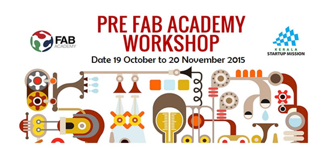

What is a fablab?
A fablab is a small workspace or a
workshop where one can engage in personal fabrication. Fab labs provide
widespread access to modern means for invention. Working by its motto the Fablab lets anyone: “how
to make almost anything”. The same way a public library or a town library imparts
access to knowledge, the space and environment to foster freethinking, free
thought and free flow of ideas, the fablab gives the
power of innovation and technology onto the hands of a user/enthusiast.
The fablab is equipped with mainly
the following:
·
3D Printing facility: typically a 3D printer of
plastic or plaster parts
·
3-axis CNC machines: 3 or more axes,
computer-controlled subtractive milling or turning machines
·
CNC Milling machines: Printed circuit board
milling or etching: two-dimensional, high precision milling to create circuit
traces in pre-clad copper boards
·
Electronics Lab & Stations: Microprocessor
and digital electronics design, assembly, and test stations
·
Cutters: for sheet material: laser cutter,
plasma cutter, water jet cutter, knife cutter
Fab Foundation
This fablab, as part of a larger,
global fab community has been set up under the initiative of the Fab
Foundation. According to the website, they
began as an outreach project from MIT's Center for Bits and Atoms (CBA). CBA
assembled millions of dollars in machines for research in digital fabrication,
ultimately aiming at developing programmable molecular assemblers that will be
able to make almost anything. Fab labs fall between these extremes, comprising
roughly fifty thousand dollars in equipment and materials that can be used
today to do what will be possible with tomorrow's personal fabricators.
Fablabs Kerala
The Fablab Kerala came into being
as a result of the Government of Kerala’s decision to collaborate with the
Centre for Bits & Atoms (CBA), Massachusetts Institute of Technology (MIT)
and foster innovation and the maker culture in Kerala. There are two such labs
set up in Kerala, one in Thiruvananthapuram and the other at Kochi. Our Pre Fab
academy course was taking place in the Fablab located
at the Technopark Campus, Thiruvananthapuram. This is
the first instance of a State promoted state of the art Fablab
being setup in India.

Fab academy & Pre
Fab Academy
Fab Academy Programme : This is a 6-month long full semester’s course back at the
Massachusetts Institute of Technology (MIT).
Pre-Fab Academy Programme : This is the first time where MIT is conducting a shorter
version Fab Academy course, like a pre-cursor or a condensed one. As part of
the programme MIT had assigned two Fab Gurus to the programme in Kerala, one is Francisco Sanchez and the other
Louisiano who spent most of their time at
Thiruvananthapuram & Kochi respectively.